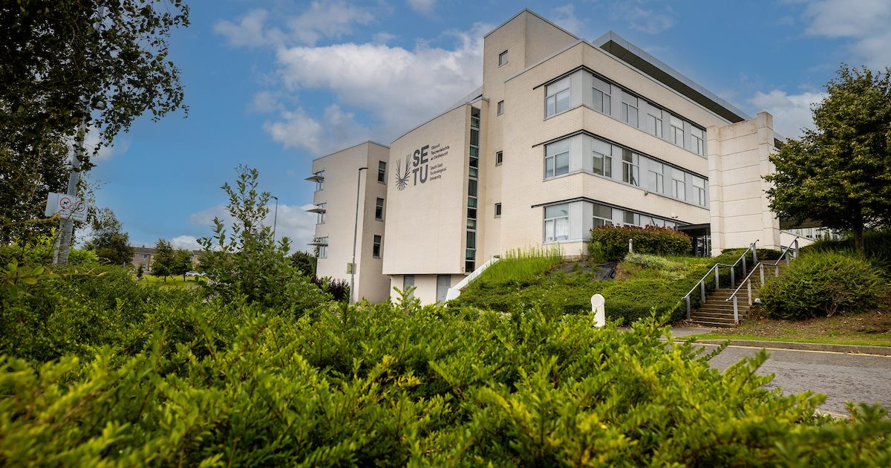

SETU
South East Technological University (SETU) situated in Waterford, is a public university. It was formed by a fusion of two existing institutes, Waterford IT and Carlow IT. SETU was established on 1 May 2022 and provides a wide range of academic programs.
BSc in Computing
The BSc in Computing (KCOMP) at South East Technological University (SETU) is a Level 7 NFQ, 3year, parttime degree designed for learners seeking foundational and practical computing skills.

Personal Experience
I've always grown up with a computer somewhere in the house.
Whether it's just using Paint application to design my Christmas cards or playing Mario. I've always found computers interesting before the internet was common use.
What I enjoy most but find it the most difficult is programming. However being able to build my first Atari version of a game, has got me very excited
I can't wait to make a version of Space Invaders or Super Mario
Also work as an I.T support staff on the I.T service desk. So i'm enjoying learning all the basics.
Here is a list of my course modules for this semester.
- Mathematics Fundamentals
- Computer Systems
- Programming Concepts
- Website Development
- Communication Skills